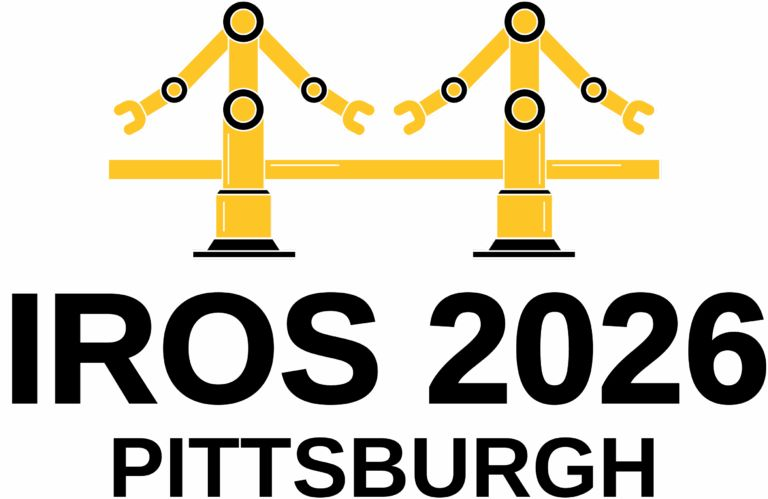
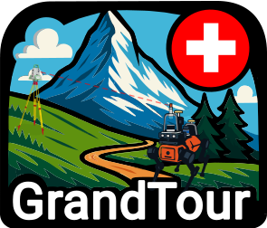
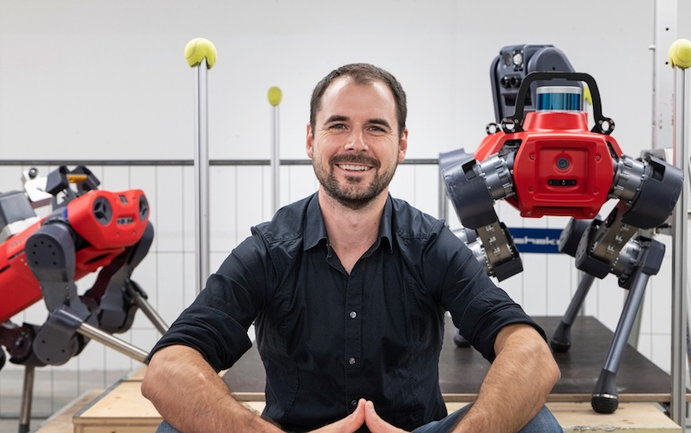

- Submission portal: OpenReview (link TBA)
- Submission opens: TBA
- Submission deadline: TBA
- Notification to authors: TBA
- Camera-ready submission: TBA
Data in Field Robotics: From State Estimation to Navigation – IROS 2026


GrandTour WebsiteAbout the Workshop
Mobile robots, including legged robots, humanoids, and drones, are increasingly deployed in unstructured and demanding environments - from scaling rubble and inspecting industrial facilities to navigating disaster zones. These open-ended tasks require robustness to terrain, resilience under degraded sensing, and adaptability to diverse task complexity. On the path to maturity in mobile robotics, data and benchmarks have proven to be the core driving factor, as demonstrated in autonomous driving. There, large-scale datasets and task-specific benchmarks have propelled tasks such as localization, mapping and detection to reach remarkable levels of precision. However, for mobile robots in the field, we are still missing this ecosystem. Unlike passenger vehicles, collecting data in the field with these platforms poses significant challenges. The cost of collecting data is high, and these platforms cannot easily carry the full payload of sensors and ground-truth systems. This raises several key open questions: What kind of datasets will have lasting impact and be most useful for robotics? Which sensors are truly essential to capture the task complexity of these platforms? What level of calibration and ground-truth effort is required to advance research in these tasks? Most importantly: how do we design benchmarks that are apt for the unique tasks and failure modes of these robots beyond navigation on suburban streets? This workshop will bring together researchers from robotics, computer vision, and machine learning to define principles for the next generation of datasets and benchmarks. By rethinking dataset and benchmark design in light of the distinct requirements of embodied intelligence, we aim to accelerate progress not only in localization, but also in perception, mapping, and long-term autonomy in the wild.
Speakers

Navigation Challenges in Subarctic Forests: From Data Collection to Evaluation
Prof. Dr. François Pomerleau
Université Laval
Webpage Google Scholar
Google Scholar
Learning Navigation from World-Scale Street-View Platforms
Dr. Cherie Ho
Stanford University
Webpage
Google Scholar

Seeing Through the Noise: Radar Data for Robust State Estimation in Field Robotics
Ayoung Kim
Seoul National University
Webpage
Google Scholar


Rising Star Talk: Frontiers in Robot Data: Examples from 4D Perception
Lukas Schmid
University of Technology Nuremberg
Website
Google Scholar
GrandTour Challenge
We invite participants to push the boundaries of state estimation by submitting results for LiDAR-Inertial Odometry, Visual-Inertial Odometry, and Leg Odometry on the GrandTour Benchmark. For full details on participation, submission guidelines, and evaluation criteria, please visit the GrandTour Challenge website.
Awards
- 1st Place: TBD
- 2nd Place: TBD
- 3rd Place: TBD
Note: To claim an award, winners must present their results at the workshop.
Further details on awards, submission process, evaluation, and additional constraints will be announced soon.
GrandTour Innovation
We also welcome submissions that advance state estimation, perception, or navigation for legged robots beyond the main challenge track. To qualify for the GrandTour Innovation prize pool, your work should propose a novel and interesting extension or research direction building on the GrandTour dataset. Please indicate in your 2–4 page submission if you wish to be considered for the GrandTour Innovation awards.
Awards
- 1st Place: TBD
- 2nd Place: TBD
- 3rd Place: TBD
Best paper awards will also be nominated independently of the Challenge and Innovation tracks.
Call for Papers
We invite 2 to 4 page double-column extended abstracts (with unlimited references and appendices) presenting new or previously published work. Extended abstracts will not be included in the official IROS proceedings and generally do not conflict with dual-submission policies. Submissions must be anonymous and follow the official IROS 2026 formatting guidelines. We recommend using the following LaTeX template.
Topics of Interest
- Data for field robotics
- State estimation, LiO, ViO
- Benchmarking and evaluation of field robotics
- Multi-modality sensing
- Navigation & Traversability
- Autonomy stacks
- Real-world deployment at scale
Submission Timeline
Please submit the extended abstract via OpenReview. We provide two submission tracks: (1) regular review and (2) fast-track review. Papers previously published elsewhere are eligible for fast-track review, where editors will assess only the suitability and relevance of the content.
Senior Organizers
Maurice Fallon
University of Oxford
Peyman Moghadam
CSIRO, QUT
Yi Zhou
HNU